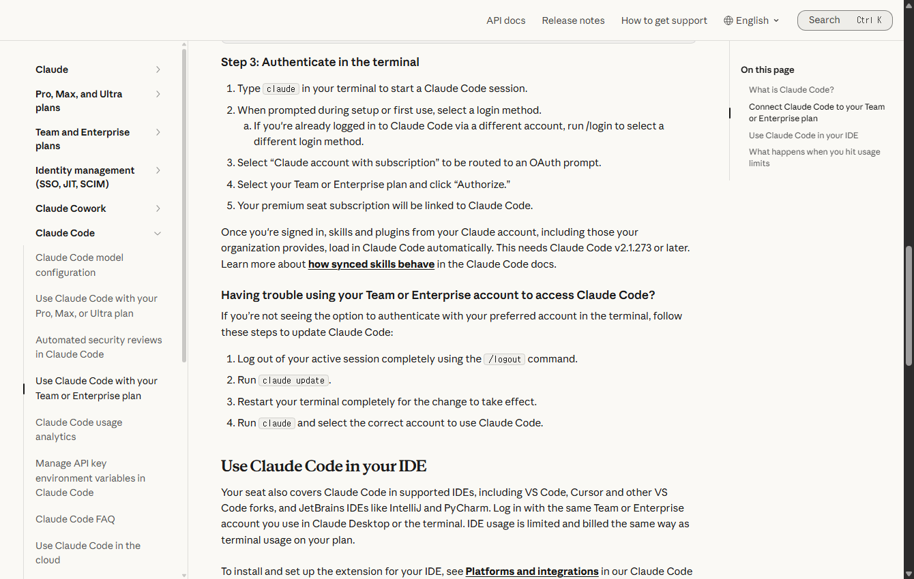

Windows 개인 실습
내 PC에서 첫 실행까지
준비된 파일로 결과를 한 번 저장한 뒤, Claude Code로 자기 업무에 맞게 바꿉니다. 외부 자료나 도구가 필요하면 연결 실습 하나를 골라 진행합니다.
공통 실습
결과를 한 번 저장해봅니다
공고 두 개에서 마감일을 찾아 비교하는 작은 도구입니다. 첫 실행을 마치면 내 업무의 입력을 써서 바꿀 부분을 Claude Code에 설명할 수 있습니다.
- 받은 ZIP을 풉니다. 탐색기에서 모두 압축 풀기를 선택합니다.
runner.py와workflow.json이 보이는 폴더를 엽니다. 탐색기 주소 표시줄에powershell을 입력하고 Enter를 누릅니다. - 폴더 위치와 Python을 확인합니다. 첫 명령의 결과가
True이고 다음 명령에서 Python 3.10 이상이 보이면 실행할 준비가 된 것입니다.Test-Path .\runner.py py -3 --versionpy가 없으면python --version을 확인하고 이후의py -3을python으로 바꿉니다. - 마감일이 바뀐 예시를 실행합니다.
samples안의 텍스트 파일 두 개를 읽어outputs/latest.md에 결과를 씁니다.py -3 runner.py --case changedoutputs/latest.md를 열어2026-12-10에서2026-12-17로 바뀐 날짜와 근거 위치를 확인합니다.outputs/runs/에는 실행마다 처리한 단계와 결과가 별도로 남습니다. - 날짜가 같은 경우와 빠진 경우를 차례로 실행합니다. 매번
latest.md를 열고, 앞선 결과와 비교합니다.py -3 runner.py --case same py -3 runner.py --case missing날짜가 같으면 변경이 없고, 새 파일에 날짜가 없으면 입력을 검토해야 합니다.
samples/after_same.txt와samples/after_missing.txt를 열어 화면의 판정을 원문과 대조합니다.
PC에서 실행 기록을 화면으로 확인합니다
같은 폴더에서 아래 명령을 실행한 다음 http://127.0.0.1:8765/에 접속합니다. 예시와 AI 모드를 선택해 실행한 뒤 단계별 기록을 펼칩니다. 미리보기에서는 오프라인과 모의 응답을 실행할 수 있습니다. 미리보기 창을 종료할 때는 PowerShell에서 Ctrl+C를 누릅니다.
py -3 preview.pyPowerShell에서 파일을 찾지 못했어요
Get-Location을 실행해 현재 위치를 확인합니다. ZIP을 풀지 않았거나 부모 폴더를 연 경우에는 runner.py가 보이는 폴더에서 창을 다시 엽니다. Python 설치가 제한된 PC에서는 브라우저 실습에서 먼저 실행 흐름을 따라갈 수 있습니다.
제작과 실행에 쓰는 두 가지 요청
Claude Code를 연결하고 응답을 확인합니다
- 설치와 계정 연결 상태를 각각 확인합니다.
claude --version claude auth status --text버전이 표시되고 Team 계정으로 연결되어 있다면 다음으로 넘어갑니다. 로그인이 필요한 경우
claude auth login으로 공식 로그인 화면을 열어 본인 Team 계정을 선택합니다. - 도구를 만들 때는 작업 폴더에서
claude를 엽니다. 입력, 처리, 결과 세 줄을 설명하고 바뀐 파일과 실행 방법을 확인합니다. - 도구가 모델을 부를 때는 한 번 요청하고 결과를 받습니다.
claude -p '마감일이 2026-12-10에서 2026-12-17로 변경됐다. 두 날짜를 그대로 써서 안내 문장 한 줄을 작성해줘.' --output-format json-p는 응답을 출력한 뒤 종료합니다. JSON 응답을 받아 날짜와 문장을 확인할 수 있습니다. 실습을 마치고 이 PC의 Claude Code 연결을 해제해야 할 때는claude auth logout을 사용합니다.



같은 입력에 AI 단계를 붙여 비교합니다
시작 파일에서 --ai simulate를 주면 개정 전 날짜인 2026-12-10을 돌려주는 모의 응답이 AI 단계로 들어갑니다. 첫 실행 결과와 비교해 어떤 단계가 확인 보류로 판정하는지 살핍니다.
py -3 runner.py --case changed --ai simulate실제 응답까지 받아보고 싶다면 Team 연결과 짧은 요청을 확인한 뒤 아래 명령을 실행합니다. 이 모드는 수업용 공고 한 쌍에서 추출한 변경 정보로 공식 CLI를 호출합니다.
py -3 runner.py --case changed --ai claudeoutputs/latest.md에서 코드가 비교한 두 날짜와 AI 초안의 상태를 봅니다. 초안이 없거나 날짜가 다르면 실행 기록에서 모델 호출과 검사 단계의 결과를 각각 찾아봅니다.로그인은 됐는데 모델 응답이 없어요
먼저 claude -p의 오류에서 Team 계정·조직, 사용량, 네트워크 중 무엇이 막혔는지 확인합니다. --ai simulate로는 잘못된 모델 응답을 처리하는 검증 흐름을 계속 실습할 수 있습니다.
선택 실습 · 외부에서 값을 받기
공개 API에서 받은 한 값을 내 도구에 넣습니다
현장 방문 준비 도구라면 지역 좌표로 시간대별 강수확률을 받아 일정에 붙일 수 있습니다. API 문서에서 보내야 할 값과 돌아오는 값의 이름을 확인합니다. 이 예에서는 부산 근처 위도·경도와 필요한 항목 이름을 전달합니다.
- PowerShell에서 한 번 요청합니다.
Invoke-RestMethod는 응답 JSON을 PowerShell에서 읽을 수 있는 값으로 바꿉니다.$forecastUrl = 'https://api.open-meteo.com/v1/forecast?latitude=35.18&longitude=129.08&hourly=precipitation_probability&timezone=Asia%2FSeoul&forecast_days=1' $weather = Invoke-RestMethod -Uri $forecastUrl -TimeoutSec 15 -ErrorAction Stop $weather.hourly.time[0] $weather.hourly.precipitation_probability[0] - 입력 형식을 정합니다. 첫 줄은 예보 시각, 둘째 줄은 같은 시각의 강수확률입니다. 자신의 도구에서 쓰려면
time과precipitation_probability중 필요한 항목을 정하고, 어떤 단계가 그 값을 사용할지 연결합니다. - 같은 구조로 다른 좌표를 넣습니다. 결과에서 시각과 값이 같은 순번으로 짝지어지는지 확인합니다. 비어 있는 데이터는 값 없음으로, 명령에 연결 오류가 나오면 요청 실패로 기록합니다. 강수확률
0은 정상적으로 받은 숫자입니다.
내 도구에 붙일 때는 아래처럼 작업 범위를 좁혀 Claude Code에 요청합니다.
강수확률을 가져오는 단계 하나를 연결해줘. 입력은 위도·경도이고, 결과는 첫 예보 시각과 그 시각의 강수확률이야. 요청 실패와 예보 값 없음은 서로 다른 상태로 남기고, 강수확률이 0인 예시도 시험해줘.
선택 실습 · 내 기능을 도구로 공개하기
내가 바꾼 규칙을 MCP로 호출합니다
찾아준 자료를 어떤 방식으로 설명할지, 독자 유형에 따라 규칙을 돌려주는 MCP 서버입니다. style_server.py가 도구를 제공하고 call_style.py가 목록을 읽어 도구를 호출합니다.
- MCP 실습 파일을 받습니다. ZIP을 풀고
requirements.txt가 있는 폴더에서 PowerShell을 엽니다. 이 폴더만 사용하는 Python 환경을 준비합니다.py -3 -m venv .venv .\.venv\Scripts\python.exe -m pip install -r requirements.txt - 독자 유형을 바꿔 두 번 호출합니다.
.\.venv\Scripts\python.exe call_style.py children .\.venv\Scripts\python.exe call_style.py exhibittools/list아래에서 도구 이름과audience허용값을 찾습니다.tools/call다음의rule이 호출 결과입니다. - 코드 한 줄을 고친 다음 같은 요청을 보냅니다.
style_server.py를 열고"children"에 해당하는 규칙 문장을Use one short sentence.로 바꿉니다. 저장하고 어린이용·전시용 호출을 각각 다시 실행합니다.

inputSchema에는 클라이언트가 넣을 값의 형식, rule에는 서버가 실제로 돌려준 값이 보입니다.확인 · 어린이용 호출에서 새 규칙을 받습니다. 전시용 호출은 앞서 받은 규칙과 비교합니다. 자신의 업무에 도구를 붙일 때도 입력값 하나와 기대 출력 하나를 먼저 정합니다.
같은 서버를 Claude Code에서 호출합니다
Python 호출이 끝났다면, 같은 MCP 서버를 Claude Code에 연결합니다. --scope local은 현재 작업 폴더의 개인 설정에 등록합니다.
$mcpPython = (Resolve-Path .\.venv\Scripts\python.exe).Path
$mcpServer = (Resolve-Path .\style_server.py).Path
claude mcp add --transport stdio --scope local hug-card -- "$mcpPython" "$mcpServer"
claude mcp get hug-card이 폴더에서 claude를 열고 /mcp로 연결을 확인합니다. get_card_style 도구를 audience=children으로 호출해서 rule 값을 보여줘.
라고 입력한 뒤, 호출 표시와 Python 실행에서 받은 규칙을 대조합니다. 등록을 해제하려면 같은 폴더에서 claude mcp remove --scope local hug-card를 실행합니다.
도구 목록이 나오기 전에 멈췄어요
Test-Path .\.venv\Scripts\python.exe의 결과를 확인합니다. No module named mcp가 보이면 설치와 실행 모두 같은 가상환경 Python을 사용했는지 봅니다. 규칙 수정 직후의 오류라면 style_server.py의 따옴표와 쉼표를 확인합니다.
여러 연결을 한 흐름으로 읽어보기
사진 카드 예제는 NASA 검색 결과, MCP에서 읽은 문체 규칙, CPU 모델의 초안을 순서대로 저장합니다. 실제 실행에서 어느 단계의 값이 다음 단계로 전달됐는지 살펴봅니다. 이 흐름의 전체 실행은 연결을 개별로 확인한 뒤 시도할 수 있습니다.
- CPU 서버를 8081 포트에서 시작합니다. 서버 창을 열어두고, MCP를 실습한 폴더의 별도 PowerShell 창에서 실행합니다.
.\.venv\Scripts\python.exe local_workflow.py moon --audience children - 검색과 도구 호출 결과를 읽습니다.
NASA search에서 자료 건수,MCP get_card_style에서 어린이용 규칙을 확인합니다. 검색 0건이면 모델 호출과 새 파일 저장은 건너뜁니다. - 초안을 원자료와 대조합니다. 저장이 완료되면
outputs/photo-card.json을 엽니다.title과source_credit은 검색에서 온 값이고model_draft는 모델이 쓴 문장입니다.

자기 도구에도 같은 기준을 적용합니다. 앞 단계가 내보낸 근거와 문장 생성 단계의 결과를 함께 기록해두면 잘못된 말이 어느 과정에서 들어왔는지 찾을 수 있습니다.